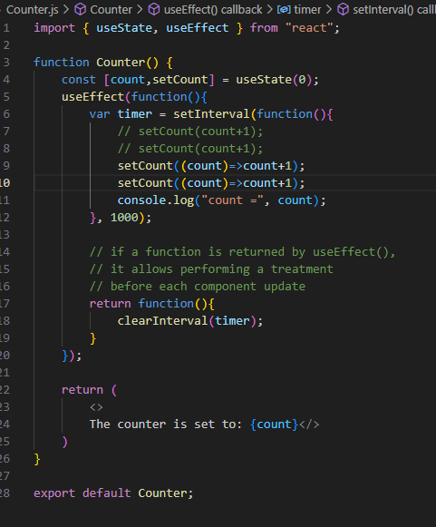
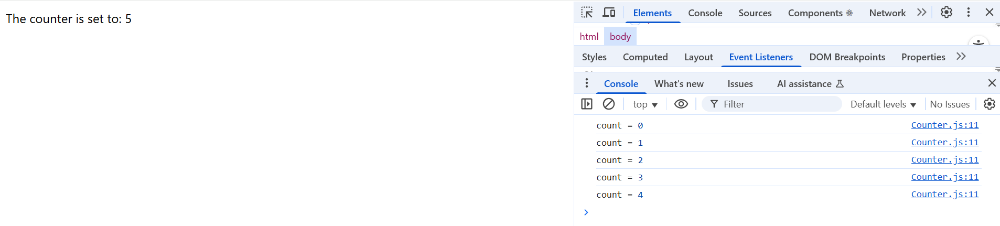
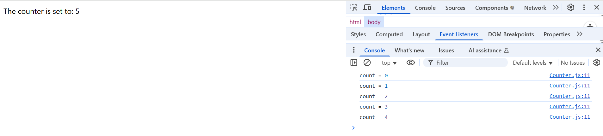
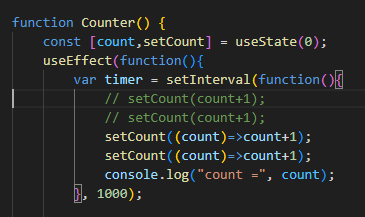

Going Back
A new layout!
As I spoke about earlier, the layout of this page was on my 'to do list' and I started digging into Jekyll, which is recommended for github pages. Some very nice themes there, but not straightforward to use. I got part way through and found that I was getting further and further from the reason I'm doing this - focus on React for now, but keep an eye on incremental improvements for the future. I found a quick W3 tutorial on a blog layout which seems to scratch the itch for now but more to follow, and another thing highlighted on the 'to-do list', I'm happy with foundation CSS, but need to get more comfortable with it.
Going Back
It's brilliant to get feedback, and thank you to everyone who's read my ramblings thus far. I got some brilliant feedback about the counter app, with a great explanation of what the 'useEffect' function is doing, and why the console counter is 'one out', and it appears to be a framing question more than anything. Whereas I'd been looking at it as 'update my value' / 'what's the value', it should be looked at as 'schedule an update' / 'what's the value'. This raised an important point that I've fallen foul of before of not being really clear on what I'm asking this infernal machine to do, then getting confused / grumpy (insert any other of the seven dwarves here) when it does exactly what I've asked it to, not what I wanted it to do or what I thought I'd asked it to do.
From really looking at the script and what's being delivered on screen, the 'console being 'one out' ended up giving me the biggest clue as to why it's happening, when combined with the framing of the function ('schedule' rather than 'do'). The console was exactly one cycle behind the main page and that made me really look at what the script was doing and when.
As the script is above, useEffect is called and uses 'var timer' to set the interval for updating the setCount function. At this stage, the console is told to update, and the function returns to stop the recurring process. When that's conducted, function Counter returns the JSX to be put onto the page (through the empty tags).
From the user's perspective, this is all conducted before the page loads, and therefore the console.log statement doesn't get triggered again until it goes through the statement again a second time, after the 1000 millisecond delay put in by the useEffect.
I had a bit of a time in trial and error of moving the console statement around, breaking things a few times admittedly, but the best location so that it returns the same information as is on the page is here, so that it 'fires' just before the return statement to put the JSX onto the page:
And here it is, actually working:

Another pointer I got was to look at the docs and read up about dependency arrays which wasn't covered in the initial chapter. From an article I found here, it looks like within this specific use case the function is already optimised with the use of const [count, setCount] = useState(init) and was probably omitted from the chapter to be introduced later in the book, but a really useful bit to get my head round, what's included in a dependency array and why (to limit the number of times the callback is run).
Inserting comments into React
Comments must be surrounded by /* and */ as you would do with a regular single-line comment, but must also be placed in curly braces, { and }, as a comment remains, technically speaking, JavaScript code and must be treated as such. If '//' is used to denote a comment, the closing curly brace must be on a separate line as it will be read as a multi-line comment.
Note. I'm using VS Code to write up the code and I got into a bit of confusion when using the comment shortcut (Ctrl + /). A mix of regular comments (//) and React comment ({/*…) can get a bit tricky, especially if you're trying to 'turn off' comments with the same shortcut, I found the IDE switching between them and then getting tied up in knots. One to watch for, and always watch for the errors.
Reflections
Not much of a 'coding' bit from this week - life gets in the way and, if I'm honest, it's probably useful to happen early on so that I recognise that life continues and that it doesn't matter if I'm posting once a day or once a week, it's not the posting that's important, it's making time to learn when I can. As a bit of a nod to a podcast that I was listening to over the weekend (Self Taught Devs Episode 12) about motivation. There was an interesting discussion about comparing motivation to habits or routine, but I think the motivation to maintain a routine is also important - one foot in front of the other is important. Speed may vary, but know your direction and even if it's a crawl forward, it's still moving.
I had a decision to make when given the cue to look at dependency arrays, to either just plough on with the book and trust that we'd come to this when the author thought suitable, or to dig around and learn for myself. There are lots of slightly tired but relevant phrases, 'do the right thing, not the easy thing' and the like, and I'm glad that I took the time to read up about it. I'm also pleased that I managed to convince my brain to listen to the advice of others and hopefully I can use this as a lesson about a lesson, to take a step back from the path I've put myself on to reflect, to see what gaps in my knowledge others have identified, and to try and right them before I carry on.
More learning to follow, honest 'guv!
Continuing with React
I left it the other day when the counter was going of a fashion, but then going bananas shortly after setting going. useEffect, with a callback function, will perform the callback function before each display (another part of React that I need to get my head around - what happens and when).
With the dictated code, we keep the setInterval containing the main meat of the 'count' aspect with useState returning the count, then refreshing with 'count+1'. But we put this function within userEffect,
The next point we go onto look at is how, in the counter app, the 'count' pushed to the console is different to the one pushed to the page, that it's out by one. The error is further shown by including two increments of the 'count' call, where the counter still iterates by 1 rather than counting in pairs (expected if the 'count' function is running twice):
 

The snippet of code shows that the separate iterations of 'count' aren't updated form each other but are updating asynchronously. Meaning that the second iteration is not using the first iteration to update itself, but is using the original version. To counter this, the book prescribes using a variation of setCount that uses a callback function as a parameter, as opposed to a value:
The difference here is that running a specified function will update the original const 'count' every time it's run and therefore the counter goes in twos:
But it still doesn't solve the original problem of the page and the console being at different stages (not to jump ahead, but I'm guessing because the console is updated within the first function that's nested in the others and the page isn't updated until the return statement of the second nested function):

There'll be method in this approach, and it's useful showing how issues with asynchronous events can be overcome, but not facing the root of the original problem we came across.
(Spoiler Alert I've come crashing to the end of the chapter, and the console is still 'out by one', so I think it best to move on. Maybe I'll get a brainwave and come back, but I'm not holding my breath.)
Moving onto using init properties for a function, you can insert an initial value (written here as 'init', and 'props' as 'property') to a specified function. The below code snippet shows passing in the 'init' property as an Integer (if stated as a "string" rather than a {JavaScript value}), or reverting to '0' if a value isn't given.

Then, as well as making changes to 'counter.js', changes are also made to App.js to demonstrate the different ways to pass an 'init' value into a function:


And a further unheralded introduction to ES6 syntax (JavaScript 2015 'new features'), you can access the 'init' property directly by using the attribute in the form of an object, making it more readable and that bit more elegant in a way:

Reflections
That takes me to the end of the first chapter, and I feel like it's covered a lot. Looking forward to some reinforcement of previous lessons in the upcoming chapters and tutorials, as well as keeping up the pace of learning. Using this as a bit of 'reflective practice' as well as anything else, I'm not sure what I want this to be, going forward. I've noticed that I've felt like i've been parotting a book for a lot of it, especially this second one, but I'm also conscious that I don't want this to be too manicured - I know if I let it get too far that way, I'll never 'hit send'. Refer to previous comments on 'sacrificing good at the altar of great' and so forth. That's not to say I'm not eager to improve, but to try and make continual improvement as I go rather than labouring over each submission.
First Steps into React
I've been learning to code for about nine months now, with multiple learning approaches so far. Do I need to 'introduce myself'? Maybe later. And no, I'm not going to 'say something interesting about myself'.
This is my very first time getting starting with React, and I'm trying to get into a book from Humble Bundle, 'Master React in 5 Days' by Eric Sarrion. I was initially nervous about a timeframe being put on the cover like this, but I'm ignoring that element and following the book as I can.
I'm fairly familiar and confident with vanilla javascript and interacting with HTML, and the first chapter has really opened my eyes to what React can do. The first bit of code that is shown wouldn't be enough to call a mini-project, but it's got the beginning concepts whirring in my head.
'Hi {name}!' page
What's struck me at this point is how the React code is that the above wasn't a mixture of HTML and JS, but it was the React script imprinting everything onto the page through the script. Yes, it's possible with vanilla JS to get html elements onto a page, but not half as cleanly as with React:

I'm still a mixture of fascinated / intrigued / baffled that the html for the page just has a single empty 'div' and that everything else is imprinted through React, but I'm already sold on the utility and possibility for React. Thinking more about it, it's only a bit of a step (leap?) from 'document.createElement…'style uses of JS to inject HTML into a page.

The above code uses JSX (JavaScript / XML which is a wonderfully ridiculous acronym in an acronym - I had to look up XML to find that it was 'Extensible Mark-up Language' which, if anything , makes it even less clear!). Defining the structure if the UI with JSX and combining more familiar javascript variables.
Creating a Counter
As I'm only 12% into the book, I'm not surprised I'm confused, but one thing that I will clearly need to get my head around is the layers of imports and exports - 'index.js' creates 'root' from the empty html div above, and renders 'App'. In the next exercise we're doing, App.js imports 'Counter' and exports 'Counter'. 'Counter.js' then returns an html tag with text in. Hopefully all will come clear in the end!
My first thought about the different layers and the multiple steps between index > App > Counter will be to allow different layers / different components so that there can be multiple apps in on the same page, each with multiple components to them. Likely easier to set the foundation at the outset. (Yes, it looks like now I'm using this as a running conversation with myself. Nothing to see here, move along.)
In counter, if left as originally coded, only the console will act as a counter and the browser will remain at 'The counter is set to: 0' as 'count' is not set as a reactive variable. To define a 'reactive variable', use the 'useState()' method.
useState(initValue), where initValue is the value you want the variable to start at, returns two variables. It's accepted good practice to call the second variable 'set' followed by the name of the reactive variable.
About Me
I'm Will and I've taken the plunge into 'learning out loud' while I try and learn how to code, focussing on web development for now.
You can find more about me and my 'journey' on the front page.
Follow Me
I'd really welcome your thoughts, feedback or anything else. While there are still grat big 'Work in Progress' areas with scaffolding around them, you can find me on LinkedIn. More to follow!